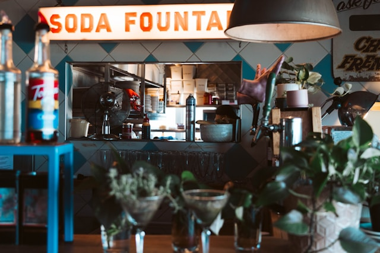

About Our Craft Sodas
This page shares the story behind Jane Doe & John Doe’s Craft Sodas and how a family project, two people with big personalities, and their favorite drinks inspired the handcrafted flavors you enjoy today.
Jane Doe, our artist and crafter, brings creativity and heart to everything she touches—especially her love for Mr. Pibb. John Doe, our man with a passion for dirt bikes, classic cars, and Fitz’s root beer, adds the spark and adventure. Their personalities and favorite sodas helped shape the flavors that started it all.
Image source Unsplash: Rod Long.